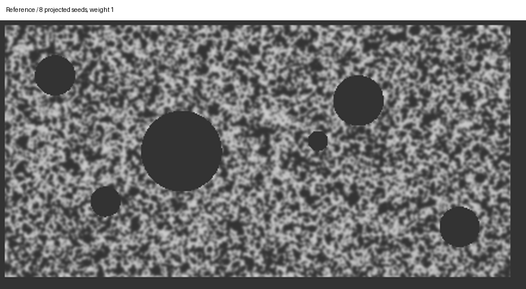
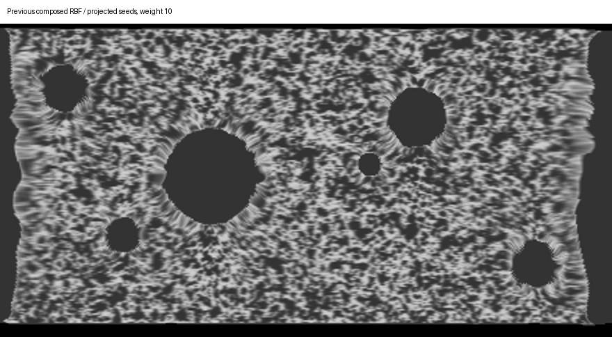

Rectificatif : cette archive utilisait le champ composé évalué sur le cercle. Elle ne teste pas la projection affine annoncée.
Les huit points régulièrement répartis sur chaque cercle sont transportés par la tangente affine de la RBF composée précédente. Ce sont des extrapolations dans le vide. Les 3 163 anciennes fenêtres mesurées restent les ancrages de l'ajustement.
Résultat négatif : les trous prennent une forme visuellement plausible, mais la corrélation du mouchetis baisse et le champ présente des jacobiennes non positives. Cette variante ne doit pas servir d'initialisation en l'état.
| Poids trou | Corrélation matière | Couronne 1–1,25 r/r₀ | Écart aux graines (px) | Déterminants non positifs dans la matière |
|---|---|---|---|---|
| 0.1 | 0.839 | 0.669 | 1.72 | 630 |
| 1.0 | 0.839 | 0.666 | 1.75 | 630 |
| 10.0 | 0.839 | 0.665 | 1.75 | 630 |
Référence : corrélation matière 0.871, couronne 0.746, sans déterminant non positif. Le recouvrement des trous est une donnée ajustée, pas une validation indépendante.

image1_ref · image1_def_cor (eog, même taille)
